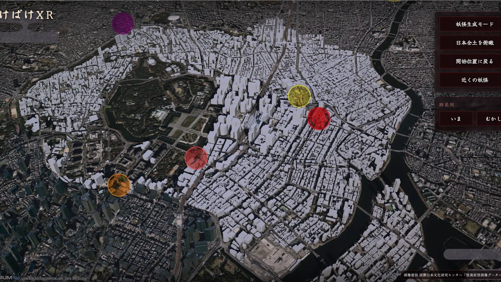

EXPERIENCE 03 ── 記録するRECORD
デジタルアース上に時空間で可視化
Spatio-temporal mapping on a digital earth
生成された妖怪と過去の伝承を地図の上に重ね、「いま」と「むかし」を行き来する。展示のデジタルアースから、伝承の「場所」をオープンソース GIS で扱う研究へ。
Generated yōkai and historical records layered on a map, moving between "now" and "then" — from the exhibition's digital earth to research that handles the "place" of folklore with open-source GIS.

土地に積み重なった怪異を辿る
Tracing the uncanny layered on a place
「記録する」体験では、デジタルアースの上に二つの層を重ねます。一つは怪異・妖怪伝承データベースに収められた過去の伝承、もう一つは「作る」体験で来場者が生み出したばかりの妖怪です。「いま」と「むかし」を切り替えながら、同じ土地にどんな怪異が語られてきたかを眺めることができます。
"Record" layers two things on a digital earth: the historical records of the Kaii–Yōkai Folklore Database, and the yōkai that visitors have just created in "Make". Switching between "now" and "then", you can see what kinds of uncanny events have been told about the same ground.
伝承の「場所」は点ではない
The "place" of a tale is not a point
伝承を地図に載せようとすると、すぐに壁にぶつかります。記録に書かれているのは「岐阜県」「川のほとり」「墓」「峠道」といった幅のある場所であって、緯度経度ではありません。県庁所在地に点を打てば、地図は実際の証拠より精密に見えてしまいます。
Put a tale on a map and you hit a wall at once. What the record says is "Gifu Prefecture", "by a river", "a grave", "a mountain pass" — places with breadth, not coordinates. Drop a pin on the prefectural capital and the map looks more precise than the evidence allows.
そこで本プロジェクトでは、各記録を「点」ではなく、行政区域のポリゴン・地名の候補・場所を表す語（川・道・境界・住居・葬送・禁忌など）・出典といった複数の証拠チャンネルとして表現し、どこまでの解像度が記録に裏付けられているかを保ったまま可視化する手法を、オープンソース GIS で構築しました。この成果を FOSS4G Hiroshima 2026 の Academic Track で発表しています。
So instead of a point, the project represents each record as several evidence channels — administrative polygons, candidate toponyms, place-description terms (water, roads, boundaries, dwellings, death rituals, taboos…) and provenance — and visualises them while keeping the resolution the record actually supports. Built with open-source GIS, this work was presented in the Academic Track of FOSS4G Hiroshima 2026.
33,378件records
解析対象にした伝承記録（元データ 35,305 行を整形）
folklore records analysed (cleaned from 35,305 database rows)
75.0%
地名ではなく「川・道・墓」のような場所の言葉で語られる記録の割合（地名を含む記録は 28.0%）
share of records that describe place with words like river, road or grave rather than a place name (28.0% contain a place name)
97.5%
地名から市区町村まで特定できた記録（1,231 件）で、候補エリアの面積がどれだけ小さくなったか（中央値）
how much the candidate area shrank (median) for the 1,231 records that could be narrowed from prefecture to municipality
数値は FOSS4G Hiroshima 2026 発表論文より。ルールで拾えた割合であり、拾った内容の正しさ（精度）を示すものではありません。
Figures from the FOSS4G Hiroshima 2026 paper. They are the share of records where a rule matched, not how accurate the match was.
なぜ「記録する」のか
Why record?
「作る」体験で生まれた妖怪は感熱紙の上で消えていきますが、地図上の記録は残ります。消えるものと残るもの、その両方をつくることで、妖怪文化を「保存された過去」ではなく「いまも増え続ける営み」として扱う――それが三つの体験を貫く考え方です。
A yōkai born in "Make" fades on its thermal paper, but its record on the map remains. Creating both what disappears and what stays is how the project treats yōkai culture not as a preserved past but as a practice that keeps growing — the idea that runs through all three experiences.